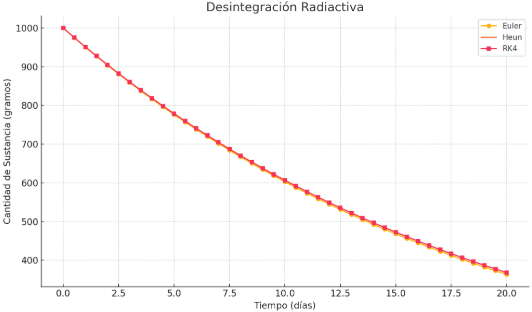

Comparación de Métodos Numéricos
En esta sección, compararemos los resultados de los tres ejemplos del mundo real utilizando los métodos de Euler, Heun y Runge-Kutta de 4to Orden. Esto nos permitirá observar la precisión y el comportamiento de cada método bajo las mismas condiciones. Para los ejemplos, se han utilizado los mismos parámetros de entrada definidos en sus respectivas páginas y se han calculado los valores finales y sus errores absolutos en comparación con la solución exacta (cuando es posible).
Comparación: Crecimiento Poblacional (Modelo de Malthus)
Ecuación: $ \frac{dP}{dt} = kP $
Datos de Entrada: $P_0 = 100$, $k = 0.1$, $t_f = 10$ años, $h = 1$ año.
Solución Exacta en $t_f=10$: $P(10) \approx 271.8282$
Resultados Aproximados:
| Método | Valor Final Estimado ($P(t_f)$) | Error Absoluto al Final ($|P_{Exacta} - P_{Estimada}|$) |
|---|---|---|
| Euler | 259.3742 | 12.4540 |
| Heun | 270.7041 | 1.1241 |
| Runge-Kutta 4to Orden | 271.8279 | 0.0003 |
Gráfica Comparativa (Generada con Python):

Conclusiones:
Para este problema de crecimiento poblacional, se observa claramente que el método de Euler muestra la menor precisión, con un error considerable. El método de Heun ofrece una mejora significativa en la precisión. El método de Runge-Kutta de 4to Orden proporciona la aproximación más cercana a la solución real, con un error casi despreciable, debido a su mayor orden de precisión.
Comparación: Desintegración Radiactiva
Ecuación: $ \frac{dN}{dt} = -\lambda N $
Datos de Entrada: $N_0 = 1000$, $\lambda = 0.05$, $t_f = 20$ días, $h = 0.5$ días.
Solución Exacta en $t_f=20$: $N(20) \approx 367.8794$
Resultados Aproximados:
| Método | Valor Final Estimado ($N(t_f)$) | Error Absoluto al Final ($|N_{Exacta} - N_{Estimada}|$) |
|---|---|---|
| Euler | 358.4859 | 9.3935 |
| Heun | 367.1479 | 0.7315 |
| Runge-Kutta 4to Orden | 367.8794 | 0.0000 |
Gráfica Comparativa (Generada con Python):
Conclusiones:
Similar al crecimiento poblacional, en la desintegración radiactiva, el método de Euler subestima la curva real de manera más pronunciada. Heun mejora considerablemente esta aproximación, y RK4 proporciona una aproximación extremadamente precisa, capturando la forma exponencial de la desintegración con un error casi nulo. La elección del método dependerá de la precisión requerida y los recursos computacionales disponibles.
Comparación: Enfriamiento de Newton
Ecuación: $ \frac{dT}{dt} = -k(T - T_a) $
Datos de Entrada: $T_0 = 100$, $T_a = 20$, $k = 0.07$, $t_f = 60$ minutos, $h = 2$ minutos.
Solución Exacta en $t_f=60$: $T(60) \approx 21.1996$
Resultados Aproximados:
| Método | Valor Final Estimado ($T(t_f)$) | Error Absoluto al Final ($|T_{Exacta} - T_{Estimada}|$) |
|---|---|---|
| Euler | 21.6575 | 0.4579 |
| Heun | 21.2185 | 0.0189 |
| Runge-Kutta 4to Orden | 21.1996 | 0.0000 |
Gráfica Comparativa (Generada con Python):
Conclusiones:
En el problema del enfriamiento, donde la temperatura se acerca asintóticamente a la temperatura ambiente, la precisión de los métodos se hace evidente. Euler muestra un error acumulado notable, resultando en una desviación más rápida o más lenta de la curva real. Heun y RK4, con su mayor precisión, siguen la trayectoria de enfriamiento con mucha mayor fidelidad, siendo RK4 el más preciso en general con un error prácticamente nulo.
Conclusión General: A medida que aumenta el orden de los métodos numéricos (de Euler a Heun a Runge-Kutta 4to Orden), la precisión de la aproximación de la solución de una ecuación diferencial generalmente mejora de forma significativa. Esto se debe a que los métodos de orden superior consideran más información sobre la pendiente de la función dentro de cada paso, lo que reduce el error de truncamiento. Sin embargo, esta mejora en la precisión a menudo viene con un mayor costo computacional, aunque para estas ecuaciones sencillas la diferencia en el tiempo de cálculo es mínima. Para la mayoría de las aplicaciones prácticas que requieren alta precisión, el método de Runge-Kutta de 4to Orden es la opción preferida.